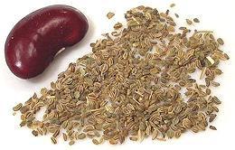

This perennial plant is native to southern Europe and southwestern Asia, but its exact place of origin is unknown, because it has been in cultivation so long. Lovage was a very important flavoring herb during the Roman Empire and is still used in parts of Southern and Eastern Europe, and especially in Georgia, but has fallen out of general culinary use in other regions. The closest substitute we have is Celery Leaves, particularly from Chinese / Cutting Celery, but it's far from perfect. Lovage flavor is similar to a combination of celery and parsley, and quite a bit stronger than celery leaves. The plant is often used as an insect repelling companion plant, and all parts have been used in herbal medicine. Photo by Microlit distributed under Free Art License v1.3.

The "seed" is actually a tiny dried fruit containing two seeds. Strangely, what is sold commercially as "Lovage Seed" is often actually Ajwan Seed, while much of what is sold as "Celery Seed" is actually part or wholly lovage seed.
More on Parsley & Aralias.
Lovage leaves are used in salads, and particularly in soups and broths. The roots can be cooked and eaten as a vegetable, or grated for salads. The seeds are used similarly as fennel seeds. In Romania it is used dried, along with seeds, as a flavoring for pickled cabbage and cucumbers.
Buying: Well, in North America, not likely - you have to grow it yourself.
Substitute: Use a combination of 2 parts Celery leaves to 1 part flat leaf Parsley leaves, and use more of this than the amount of Lovage called for in the recipe.
Health & Nutrition: Lovage roots contain Furanocoumarin compounds that can cause Phytophotodermatitis from handling them.
py_lovagez 160528 - www.clovegarden.com